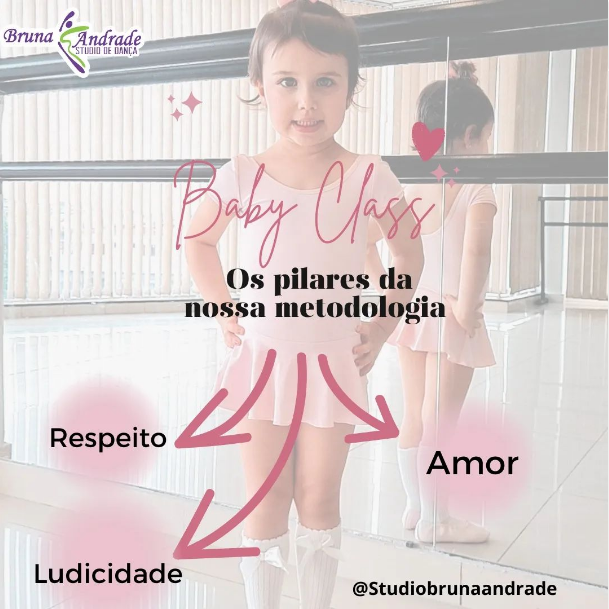

|  | Baby Class Nós temos uma metodologia, um jeito de fazer, próprio. Criado e desenvolvido por nós.Ao longo do tempo criamos e desenvolvemos um caminho próprio a seguir nas nossas aulas de Baby Class. Uma metodologia totalmente pensada, e dedicada a essa faixa etária dos 03 aos 05 anos. Na nossa metodologia transformamos os exercícios em "brincadeiras", e todas elas tem um objetivo, um por que e um pra que. Segunda: 16:30; 17:30; 18:30; Quarta: 16:30; 17:30; 18:30; Sábado: 9:30. |
 |
Pré Ballet É a próxima etapa após saírem do Baby Class. É quando preparamos as bailarinas (os) para receber informações mais técnicas, mas sem perder a diversão. Segunda: 16:30; Terça: 18:00; Quarta: 16:30; Quinta: 18:00. |
 |
Ballet Infantil É a próxima fase, a mais avançada da faixa etária infantil, onde as bailarinas (os) passam a receber mais nomes e termos técnicos, alguns chegam a conquistar a tão sonhada ponta, mas claro, com todo amor e carinho de sempre. Segunda: 19:30; Quarta: 19:30. |
 |
Ballet Avançado Como o próprio nome diz, são para aqueles que já são mais avançados nas aulas, sabem grande parte dos termos e dominam técnicas, estão no Ballet a mais tempo e, na maioria dos casos, ja usam a ponta. Terça: 17:00; Quinta: 17:00. |
 |
Aaa o Ballet adulto...Porque não? Uma das frases que eu mais ouço: " eu não tenho mais idade para fazer ballet". Amores o ballet e os nossos sonhos não tem prazo de validade. Aproveitem enquanto há tempo para fazer tudo que se tem vontade. Não há um limite de idade para iniciar os estudos no ballet. E a prática dessa modalidade traz inúmeros benefícios para o corpo e mente daqueles que praticam. O ballet é um dos exercícios mais completos que existe, unindo corpo, mente e alma. Iniciante: Sexta: 7:30; Sábado: 10:30. Intermediário: Terça: 19:00; Quinta: 19:00; Sexta: 17:00; Sábado: 13:00. |